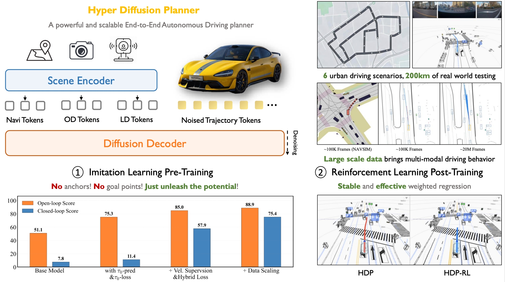
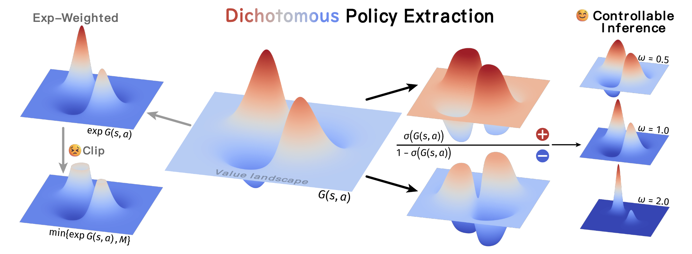
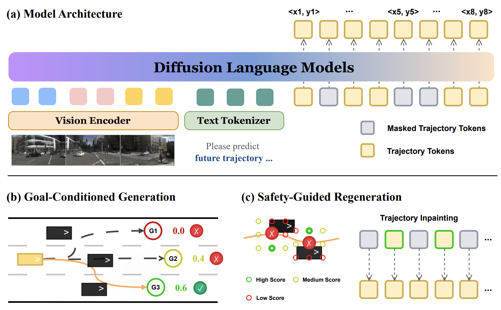
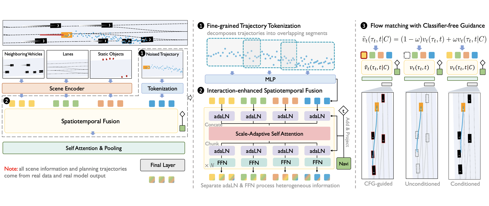
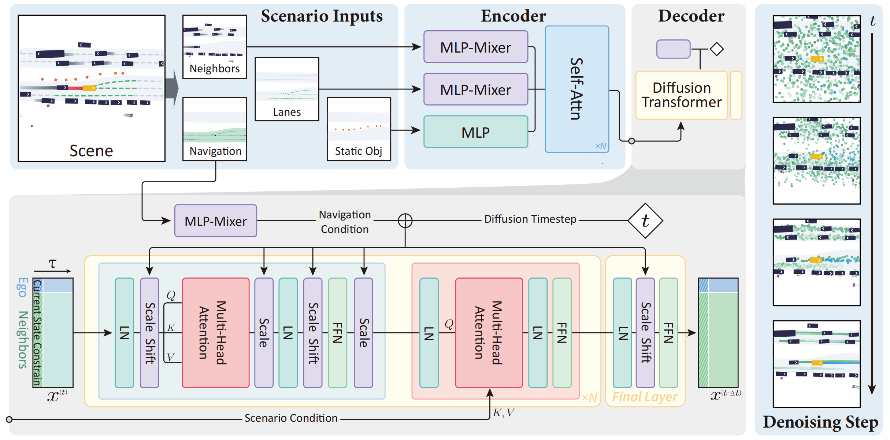
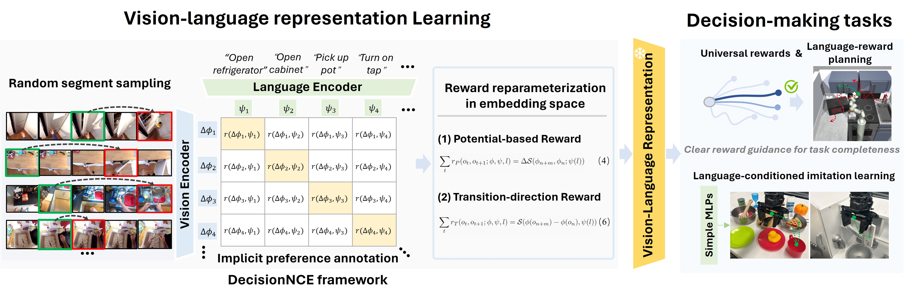
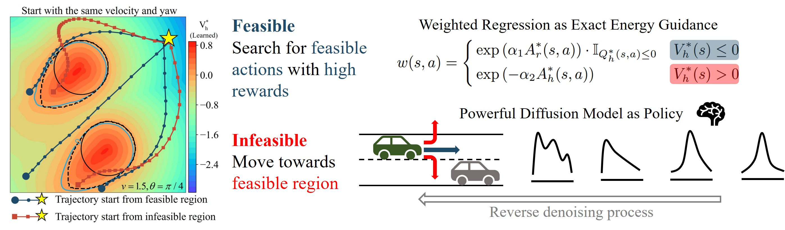

Hello! I am Yinan Zheng. I am a 3rd-year PhD candidate at AIR, Tsinghua University, advised by Prof. Xianyuan Zhan, Prof. Shengbo Eben Li and Prof. Jingjing Liu.
My research focuses on advancing AI-powered solutions for superhuman-level and safe real-world decision-making. Currently, I am working on:
- (IL/RL+X) Advancing IL/RL for scalable, efficient, and superhuman performance in decision-making.
- (GenAI+X) Leveraging the power of generative models to enhance planning, control in robotics and autonomous driving.
- (SafeAI+X) Ensuring the reliability of learning-based decision-making systems.
I am open to collaboration, feel free to reach me out!
News
- 🌟We release Hyper-Diffusion-Planner, a framework that unleashes the potential of diffusion models for end-to-end autonomous driving and has been successfully deployed on a real vehicle for closed-loop testing.
- Three papers have been accepted to ICLR 2026, including a stable diffusion RL post-training approch DIPOLE, a discrete diffusion-based VLA model with safety-aware reflection RefectDrive, and a strong VLA model X-VLA.
- 🏆Our X-VLA has won 1st place in the AGIBOT World Challenge (Manipulation track) @ IROS 2025.
- Two papers on autonomous driving (Flow-Planner) and zeroshot-rl (BREEZE) are accepted to NeurIPS 2025.
- One paper (LBP) on efficient latent planning is accepted to ICML 2025.
- One paper (UniAct) on cross-embodiment universal actions is accepted to CVPR 2025.
- 🌟Diffusion-Planner is selected as oral presentation at ICLR 2025.
- Two papers on fast post-train (PSEC) and autonomous driving (Diffusion-Planner) are accepted to ICLR 2025.
- 🌟IVM and DecisionNCE are selected as Outstanding Paper at MFM-EAI workshop @ ICML 2024.
- One paper (IVM) on embodied foundation multimodal models is accepted to NeurIPS 2024.
- One paper (DecisionNCE) on embodied multimodal representations is accepted to ICML 2024.
- 🌟One paper (FISOR) on safe offline rl is accepted to ICLR 2024.
- One paper (OMIGA) on offline multi-agent rl is accepted to NeurIPS 2023.
Selected Publications
* equal contribution · † project lead
-

-

-

Discrete Diffusion for Reflective Vision-Language-Action Models in Autonomous Driving ICLR 2026 Featured as core component of LiAuto MindVLA-O1 at NVIDIA GTC 2026 2026 Paper | Code -

-

-

-



Professional Services
Reviewer for ICLR, ICML, NeurIPS (Top Reviewer), CVPR, RA-L